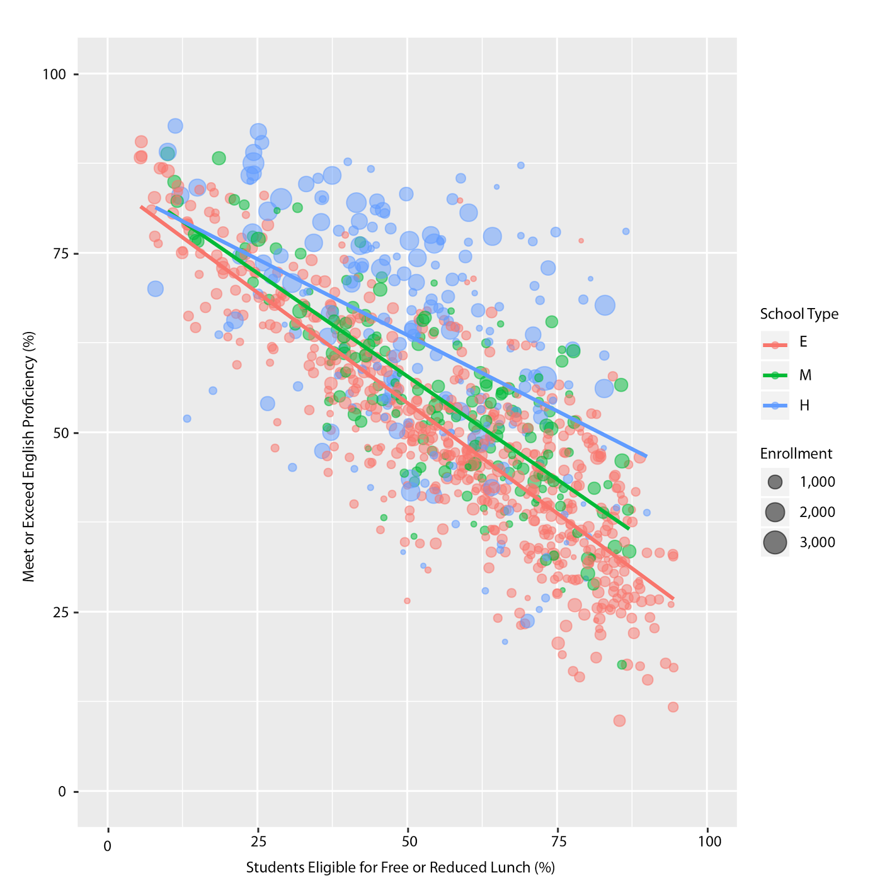

About Hack Oregon
HACK OREGON IS A COMMUNITY-POWERED NON-PROFIT BUILDING CIVIC DATA PROJECTS TO PROMOTE ENGAGEMENT, AWARENESS, AND QUALITY OF LIFE for all Oregonians.
Does afterschool programs improve kids’ in-school performance?
Hack Oregon explored this question with data partner OregonASK. Nationally, about one in four families have children in afterschool programs — including before school, afterschool and summer activities. Nearly all parents — nine in ten surveyed — are happy with these programs and believe they provide a range of skill development and enrichment activities that enhance their children’s social and emotional development, physical health, and academic achievement.
Source: America After 3:00pm: Afterschool Programs in Demand (October 2014)
http://www.afterschoolalliance.org/documents/AA3PM-2014/AA3PM_National_Report.pdf
In Oregon, a smaller share of children participate in afterschool programs — just 16%, up from 10% in 2004. Like parents nationally, nearly all (93%) Oregon parents are pleased with their children’s programs, citing benefits not just for their children but for their families and communities.
Clearly, Oregon parents believe afterschool programming benefits their children. But what does the evidence say? Does programming help kids perform better in school? Are there additional outcomes we can measure?
Several aspects of afterschool programming make these questions difficult to answer:
(Learn more about Afterschool Programming.)
But none of these challenges is insurmountable. And we have to start somewhere. So, with the help of OregonASK and a team of dedicated volunteers, the Programming to Progress team sought to find whether programming helps Oregon kids do better in school.
We brought data on student achievement from the Oregon Department of Education together with afterschool survey data collected by OregonASK to examine this question. Data collected by the Oregon Department of Education data is from the 2014-15 school year, while OregonASK’s data is from the 2013-2014 school year.
In order to isolate the effect of afterschool programming on student performance, we modeled the effect of poverty on performance first — because we know that poverty does impact student performance.
We used free or reduced price lunch eligibility (FRLE) as an indicator of poverty and compared the percentage of students eligible in each of the schools in our data set (993) to the percentage of students in each school who met or exceeded math, reading, or science benchmarks on standardized tests.
This resulted in a “best fit” line that shows the relationship between poverty and performance.

We then computed the difference between the actual percentage of students meeting or exceeding benchmarks in each Oregon school to the expected percentage based on our model. We attributed the difference (residual performance) to programming.
A full description of the methodology — including interim formulas and charts — is available here.
This project was built 100% by volunteers.
All Hack Oregon Projects are open source, built entirely by volunteers from our local community. Programming to Progress Team members follow.
Meet the Team
The project engaged a core team of 20 and dozens of volunteers, experts, and sponsors who made sure all of us were fed and caffeinated as needed.
The Programming to Progress team would like to thank the following individuals for their time and expertise in making this project come to life:
If you live in the Oregon area, or would like to contribute remotely, you can work with us!
Although each of our projects require a slightly different blend of talents and resources, our teams are always interdisciplinary and always have roles available for people at all levels of experience. We place our team members by balancing the skills they want to contribute with the skills they want to learn -- and by operating outside of normal bureaucratic, client-based, or venture funded restrictions, we’re free to move fast and innovate faster.
It’s not always easy, but we think it’s worth it. Find out more about us at hackoregon.org.
HACK OREGON IS A COMMUNITY-POWERED NON-PROFIT BUILDING CIVIC DATA PROJECTS TO PROMOTE ENGAGEMENT, AWARENESS, AND QUALITY OF LIFE for all Oregonians.